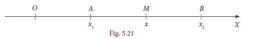
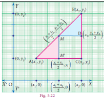
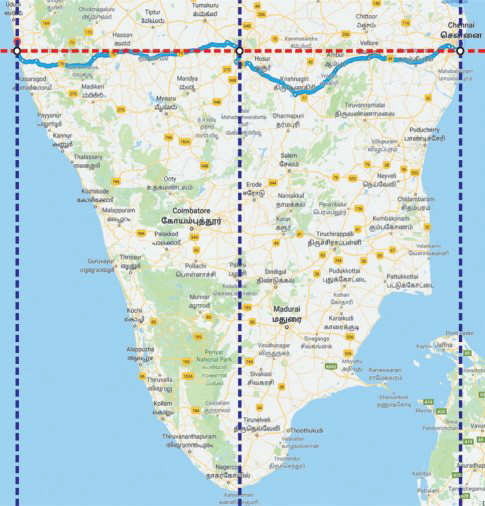
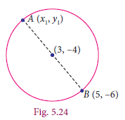
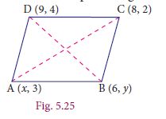
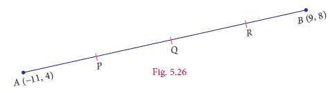
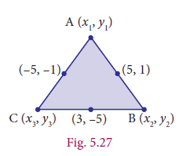
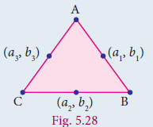

Example 5.11
Show that (4, 3) is the centre of the circle passing through the points (9, 3), (7,–1), (–1,3). Also find its radius.
Solution
Let P all in bracket (4, camma 3), A(9, camma 3), B(7, camma –minus1) and C(–minus1, camma 3)
If P is the centre of the circle which passes through the points A, B, and C, then P is equidistant from A, B and C (i.e.) PA equal PB equal PC
By distance formula,
d equal √(x2-x1)2+(y2-y1)2
AP = PA equal√(4-9)2+(3-3)2=√(-5)2+(0)2=√25 = 5
BP equal PB equal √(4-7)2+(3+1)2=√(3)2+(4)2=√9+16=√25=5
CP = PC equal √(4+1)2+(3-3)2=√(5)2+(0)2equal√25= 5
PA equalPB = PC equal 5, Radius equal 5
Therefore, P is the centre of the circle, passing through A, B and C
Exercise 5.2
1. Find the distance between the following pairs of points.
(i) (1, 2) and (4, 3)
(ii) (3,4) and (– 7, 2)
(ii) (a, b) and (c, b)
(iv) (3,– 9) and (–2, 3)
Answer 1. (i) √10 units (ii) 2√ 26 units (iii) c–a (iv)13 units
2. Determine whether the given set of points in each case are collinear or not.
(i) (7,–2),(5,1),(3,4)
(ii) (a,–2), (a,3), (a,0)
Answer (i) Collinear (ii) Collinear 7. 5 or 1
3. Show that the following points taken in order form an isosceles triangle.
(i) A (5,4), B(2,0), C (–2,3)
(ii) A (6,–4), B (–2, –4), C (2,10)
4. Show that the following points taken in order form an equilateral triangle in each case.
(i) A(2, 2), B(–2, –2), (ii) , B (0,1), C(0,3)
5. Show that the following points taken in order form the vertices of a parallelogram.
(i) A(–3, 1), B(–6, –7), C (3, –9), D(6, –1) (ii) A (–7, –3), B(5,10), C(15,8), D(3, –5)
6. Verify that the following points taken in order form the vertices of a rhombus.
(i) A(3, camma –2), B (7 camma,6),C (–1, camma 2), D (–5, camma –6) (ii) A (1,1), B(2,1),C (2,2), D(1,2)
7. A (–1, camma 1), B (1, 3) and C (3 camma, a) are points and if AB = BC, then find ‘a’.
8. The abscissa of a point A is equal to its ordinate, and its distance from the point B(1, 3) is 10 units, What are the coordinates of A?
Answer 8. Coordinates of A (9, 9) or (–5, –5) 9. y = 4x+9 10. Coordinates of P (2,0)
9. The point (x, y) is equidistant from the points (3,4)and(–5,6). Find a relation between x and y.
10. Let A(2, 3) and B(2 camma –4) be two points. If P lies on the x-axis, such that AP =3/7 AB, find the coordinates of P.
11. Show that the point (11,2) is the centre of the circle passing through the points (1,2), (3,–4) and (5, camma –6)
12. The radius of a circle with centre at origin is 30 units. Write the coordinates of the points where the circle intersects the axes. Find the distance between any two such points.
Answer 12. 30 root 2
Imagine a person riding his two-wheeler on a straight road towards East from his college to village A and then to village B. At some point in between A and B, he suddenly realises that there is not enough petrol for the journey. On the way there is no petrol bunk in between these two places. Should he travel back to A or just try his luck moving towards B? Which would be the shorter distance? There is a dilemma. He has to know whether he crossed the halfway mid-point or not.

sThe above Fig. 5.21 illustrates the situation. Imagine college as origin O from which the distances of village A and village B are respectively and. Let M be the mid-point of AB then x can be obtained as follows.
AM = MB and so, x -x1 = x2 -x1
and this is simplified to x=x1+x2/2
AM is equal to MB AND x one minus x 2 is equal to x2 minus x
, x is equal to x one plus x two divided by 2.
A bracket of ) ,B bracket of )
Now it is easy to discuss the general case. If A(x1,y1)B(x2,y2) are any two points and M(x,y) is the mid-point of the line segment AB, then is the mid-point of AC (in the Fig. 5.22). In a right triangle the perpendicular bisectors of the sides intersect at the mid-point of the hypotenuse. (Also, this property is due to similarity among the two-coloured triangles shown; In such triangles, the corresponding sides will be proportional).

Another way of solving
(Using similarity property)
Let us take the point M as M(x,y)
Now, ∆AMM’ =∆MBD are similar. Therefore,
AM’/MD=MM’/BD=AM/MB
X-X1/X2-X1=Y-Y1/Y2-Y1=1/1 (AM = MB)
Consider, X-X1/X2-X1 = 1
2x= X2+X1
X=X2+X1/2
Similarly, y=y2+y1/2
AM dash divided by MD is equal to M M tase divided by BD is equal to AM divided by MB
x minus x 1 divided by x 2 minus x is equal to y minus y 1 divided by y 2 minus y is equal to
x minus x 1 divided by x 2 minus x is equal to 1
2x is equal to x 2 plus x 1 gives x equal to x2 plus x1 divided by 2
similarly y2 plus y1 divided by 2
2x is equal to
,
Y is equal to y2 plus y1 divided by 2
x-coordinate of M=the average of x-coordinates of A and C=x1x2/2 and similarly,
y-coordinate of M=the average of y-coordinates of B and C=y1y2/2
The mid-point of the line segment joining the points A(x1,y1)and B(x2,y2) is
M(x1+x2/2,y1+y2/2)
For example, The mid-point of the line segment joining the points(-8,10)and (4,-2 is given by where(x1+x2/2,y1+y2/2) , where x1=-8,x2=4 = 4,
y1= 10 and y2=- 2. The required mid-point is (-8+4/2,-10- 2/2) , or (-2,-6).
Let us now see the application of mid-point formula in our real-life situation, consider the longitude and latitude of the following cities.

Name of the city |
Longitude |
Latitude |
Chennai (Besant Nagar) |
80.27° E |
13.00° N |
Mangaluru (Kuthethoor) |
74.85° E |
13.00° N |
Bengaluru (Rajaji Nagar) |
77.56° E |
13.00° N |
Let us take the longitude and latitude of Chennai (80.27° E, 13.00° N) and Mangaluru (74.85° E , 13.00° N) as pairs. Since Bengaluru is located in the middle of Chennai and Mangaluru, we have to find the average of the coordinates, that is (80.27+74.85/2,13.00+13.00/2) Th is gives (77.56°E, 13.00°N) which is the longitude and latitude of Bengaluru. In all the above examples, the point exactly in the middle is the mid-point and that point divides the other two points in the same ratio.
Example 5.12 Th e point (3,- 4) is the centre of a circle. If AB is a diameter of the circle and B is (5,- 6), find the coordinates of A.
Solution

Let the coordinates of A be (x1,y1 ) and the given point is B (5,-6 ). Since the centre is the mid-point of the diameter AB, we have
X1plus x2/by2equal 3
x1 plus5 equal6
x1= 6- minus5
x1= 1
y1+y 2/ 2equal minus4
y1 minus6 equal minus8
y1 equal minus 8+ 6
y1 equal minus 2
Therefore, the coordinates of A is (1,- 2).
Progress Check
(i) Let X be the mid-point of the line segment joining Q(,) 82−and (, ) 3xand Y be the mid-point of the line segment joining A(,) 85−and B(,) −211. Find the mid-point of the line segment XY.
(ii) If is the mid-point of the line segment joining the points and then find the value of ‘x ’.
Example 5.13
If all in brackets (x,3), (6,y), (8,2) and (9,4) are the vertices of a parallelogram taken in order, then find the value of x and y.
Solution Let A(x,3), B(6,y), C(8,2) and D(9,4) be the vertices of the parallelogram ABCD. By definition, diagonals AC and BD bisect each other.
Mid-point of AC = Mid-point of BD

(x+8/2,3+2/2)=(6+9/2,y+4/2)
Equating the coordinates on both sides, we get
Hence,,x=7 and y=1.
X+8/2=15/2 and 5/2=y+4/2
X+8=15 5=y+4
Xequal7 yequal1
Thinking Corner
A(6,1), B(8,2) and C(9,4) are three vertices of a parallelogram ABCD taken in order. Find the fourth vertex D. If (x1,y1 ), (x2,y2), (x3,y3) and (x4,y4) are the four vertices of the parallelogram, then using the given points, find the value of (x1+x3-x2,y1+y3-y2 ) and state the reason for your result.
Example
Find the points which divide the line segment joining A(−11,4) and B(9,8) into four equal parts.

Solution
Let P, Q, R be the points on the line segment joining A(−11,4) and B(9,8) such that AP=PQ=PR=RB
Here Q is the mid-point of AB, P is the mid-point of AQ and R is the mid-point of QB.
Q is the mid-point of AB = (−11 +9/2, 4+8/ 2) =( -2/2,12/2)= (-1,6),
P is the mid-point of AQ = (−11 -1/2, 4+6/ 2) =( -12/2,10/2)= (-6,5)
R is the mid-point of QB = (−1+9/2, 6+8/ 2) =( 8/2,14/2)=(4,7)
Hence the points which divides AB into four equal parts are P(–6, 5), Q(–1, 6) and R(4, 7).
Example 5.15
The mid-points of the sides of a triangle are all in brackets (5,1),(3,-5)and(-5,-1). Find the coordinates of the vertices of the triangle.

Solution Let the vertices of the ∆ABC be A(x1,y1), B(x2,y2) and C(x3,y3) the given mid-points of the sides AB, BC and CA are (5,1)(3,-5)and(-5,-1) respectively. Therefore,
X1+x2/2=5
X1+x2 = 10 ...(1)
X2+x3/2=3
X2+x3 = 6 ...(2)
X3+x1/2=-5
X3+x1 = -10...(3)
Adding (1), (2) and (3) y1+y2/2=1
y1+y2 = 2 …(5)
y2+y3/2=-5
y2+y3 = –10 …(6)
y3+y1/2=-1
y3+y1 = –2 …(7)
Adding (5), (6) and (7),
2y1+2y2+2y3=6 2y1+2y2+2y3=6
y1+y2+y3=3 ...(4) y1+y2+y3=3 ...(8)
(4)-(2) x1=3-6=-3 (8)-(6) y1=_5+10=5
(4)-(3) x2=3+10=13 (8)-(7) y2=_5+2=-3
(4)-(1) x3=3-10=-7 (8)-(5) y3=-5-2=-7
bracket of 1) , bracket of 2) and bracket of 3) add
2x1plus 2x2plus 2x3 is equal to 6
divided by2
X1plus X2plus X3 is equal to 3 …………… bracket of 4)
bracket of 4) − bracket of 2) ⇒X1 is equal to 3−6 is equal to −3
bracket of 4) − bracket of 3) ⇒X2 is equal to 3plus 10 is equal to 13
bracket of 4) − bracket of 1) ⇒X1 is equal to 3−10 is equal to −7
bracket of 5) , bracket of 6) மற்றும் bracket of 7 ADD,
2Y1plus 2Y2plus 2Y3 is equal to −10
divided by2
Y1plus Y2plus Y3 is equal to −5 …………… bracket of 8)
bracket of 8) − bracket of 6) ⇒Y1 is equal to −5plus 10 is equal to 5
bracket of 8) − bracket of 7) ⇒Y2 is equal to −5plus 2 is equal to −minus3
bracket of 8) − bracket of 5) ⇒Y1 is equal to −5−2 is equal to −minus15
Therefore, the vertices of the triangles are A(-minus3, camma 5),B(13, camma -3) and C(-minus7 camma,7)
Thinking Corner
If (a1,b1),( a2,b2) and (a3,b3) are the mid-points of the sides of a triangle, using the mid-points given in example 5.15 find the value of (a1+a3-a2,b1+b3-b2 ), (a1+a2-a3,b1+b2-b3 ) and (a2+a3-a1,b2+b3-b1 ). Compare the results. What do you observe? Give reason for your result?

Exercise 5.3
1.Find the mid-points of the line segment joining the points A(,)−54B(,) −−12
(i) (−2, camma 3) and (−6, camma −5) (ii) (8, camma −2) and (−8, camma 0)
(iii) (a, camma b) and (a+2b camma,2a−b) (iv) (1/2, camma 3/7) and (3/2 camma,-11/7)
2.The centre of a circle is (−4 camma,2). If one end of the diameter of the circle is (−3, camma 7), then find the other end.
3.If the mid-point (x, camma y) of the line joining (3, camma 4) and (p, camma 7) lies on B(,) 07, then what will be the value of p?
4.The mid-point of the sides of a triangle are (2, camma 4), (−2, camma 3) and (5, camma 2). Find the coordinates of the vertices of the triangle.
5.O(0,0) is the centre of a circle whose one chord is AB, where the points A and B are (8,6) and (10,0) respectively. OD is the perpendicular from the centre to the chord AB. Find the coordinates of the mid-point of OD.
6.The points A(-5, camma 4) 1, B(-1 camma,-2) and C(5, camma 2) are the vertices of an isosceles right-angled triangle where the right angle is at B. Find the coordinates of D so that ABCD is a square.
7.The points A(-3 camma,6), B(0,7) and C(1, camma 9) are the mid-points of the sides DE, EF and FD of a triangle DEF. Show that the quadrilateral ABCD is a parallelogram.
8.A(-3 camma,2), B(3, camma 2) and C(-3,- camma 2) are the vertices of the right triangle, right angled at A. Show that the mid-point of the hypotenuse is equidistant from the vertices.
Answer Exercise 5.3
1.(i) (-4, -1)(ii) (0,-1) (iii) (a+b,a) (iv) (1,-1)
2. (-5, camma -3) 3. P = −15 4. (9, camma 3) (-5 camma,5) and (1, camma 1)
5. (9/2, camma 3/2) 6. (1, camma 8)